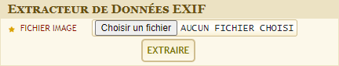
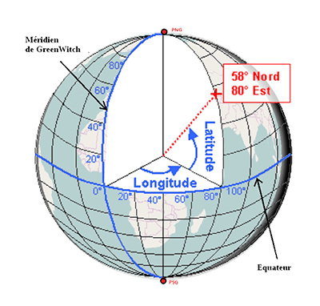
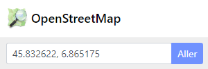

Le fichier numérique d'une photographie ne contient pas uniquement les informations sur les couleurs des pixels.
Il peut également contenir le nom de l'appareil qui a servi à prendre la photo, la date de la prise de vue, si un flash a été utilisé... Ces informations s'appelles les métadonnées.
Pour les fichiers de photographies, les métadonnées sont enregistrées dans un format appelé EXIF (Exchangeable Image File Format).
II - Mise en pratique sur une photographie
Dans toute cette partie, on travaillera avec l'image qui se trouve dans le dossier "Public" de la classe.
1) Récupérer les données EXIF d'une photographie
Manipuler
🖰 Récupérer l'image qui se trouve dans le dossier "Public" de la classe et l'enregistrer dans votre espace (dans un dossier adapté).
🖰 Charger la photographie et extraire les données EXIF

➥ Les données s'affiches dans la colonne de gauche.
🖰 Enregistrer le fichier contenant les données dans votre espace.
Répondre aux questions suivantes :
1) Avec quel modèle d'appareil la photographie a-t-elle été prise ?
2) A quelle date et à quelle heure la photographie a-t-elle été prise ?
3) Quelle est la définition de l'image ?
2) Les informations de géolocalisation
S'informer
La position d'un point à la surface de la Terre est données par deux angles : la longitude et de la latitude.

Dans un fichier EXIF ces deux angles sont exprimées en \(heures\), \(minutes\), \(seconde\).
La valeur décimale s'obtient en faisant l'opération suivante : \(angle_{10} = heures + \dfrac{minutes}{60} + \dfrac{secondes}{3600}\)
Exemple :
Si GPSLatitude a pour valeurs : \(35/1\) ; \(22/1\) et \(654/100\)
Alors la latitude en valeur décimale vaut : \(L = \left(\dfrac{35}{1}\right) + \dfrac{\left(\dfrac{22}{1}\right)}{60} + \dfrac{\left(\dfrac{654}{100}\right)}{3600}\)
Manipuler
Détermination de la latitude et de la longitude
Relever les données EXIF suivantes : GPSLatitude et GPSLongitude.
Calculer les valeurs décimales de la latitude et de la longitude.
Affichage sur une carte
Ouvrir le service de cartographie en ligne openstreetmap
Dans la zone de recherche entrer les coordonnées du point recherché sous la forme : Latitude décimale, Longitude décimale.

Reporter le résultat des actions précédentes sur votre compte-rendu.
Indiquer le lieu où la photo a été prise.
Copier-coller une impressions écran de la carte dans votre compte rendu.
III - Intérêts des données EXIF et précautions à prendre
Un peu de bon sens...
1) Présenter une situation pour laquelle il est souhaitable que la photographie n'ait pas de données EXIF (on précisera la ou les données EXIF à supprimer).
2) Présenter une situation pour laquelle il est intéressant que la photographie ait des données EXIF (on précisera les données EXIF intéressantes).
Savoir utiliser son téléphone portable
Rechercher sur votre téléphone portable comment mettre ou ne pas mettre les données EXIF (en particulier la géolocalisation) pour les photographies que vous prenez.
Indiquer succinctement la procédure à suivre sur votre compte-rendu.